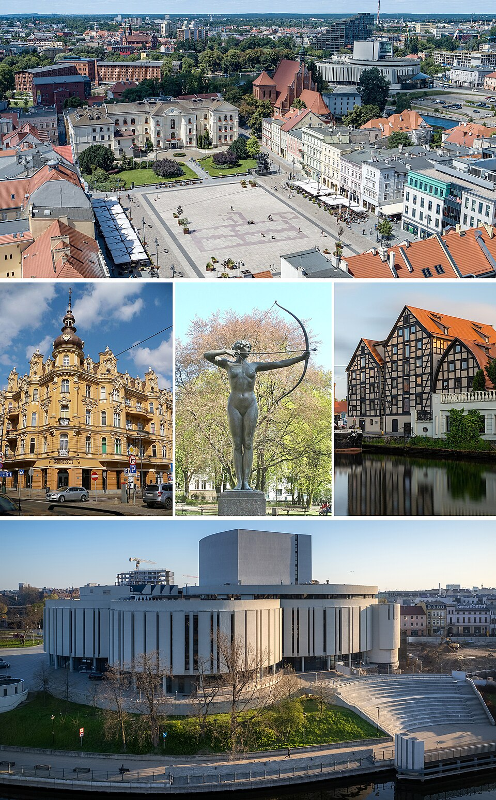

Województwo łódzkie położone jest w centralnej Polsce i oferuje wiele atrakcji związanych z historią, kulturą oraz przyrodą. Region słynie z przemysłowego dziedzictwa Łodzi, licznych pałaców, skansenów i malowniczych parków krajobrazowych. To doskonałe miejsce dla osób zainteresowanych zwiedzaniem zabytków oraz aktywnym wypoczynkiem.
Województwo kujawsko-pomorskie zachwyca bogatą historią, zabytkową architekturą oraz malowniczym położeniem nad Wisłą. Turyści mogą zwiedzać średniowieczne miasta, takie jak Toruń, odkrywać uzdrowiska i korzystać z licznych szlaków pieszych oraz rowerowych. Region łączy walory kulturowe z pięknem przyrody, oferując atrakcje dla całej rodziny.
